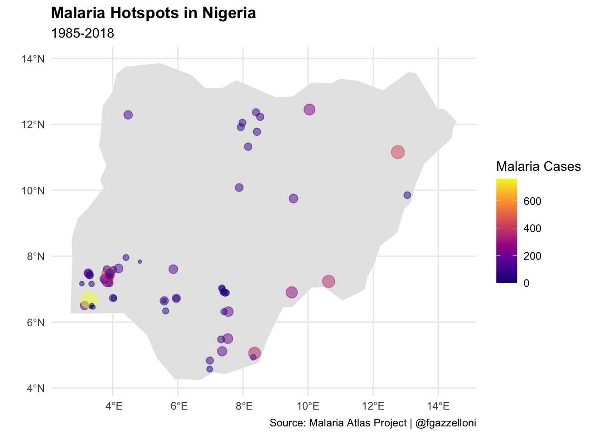
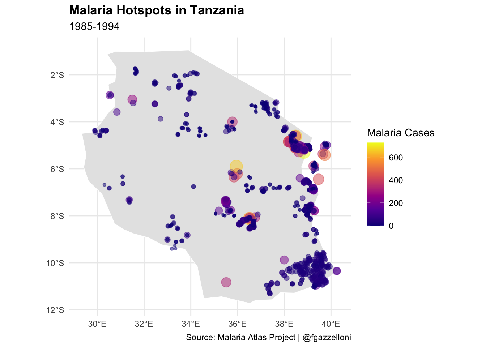
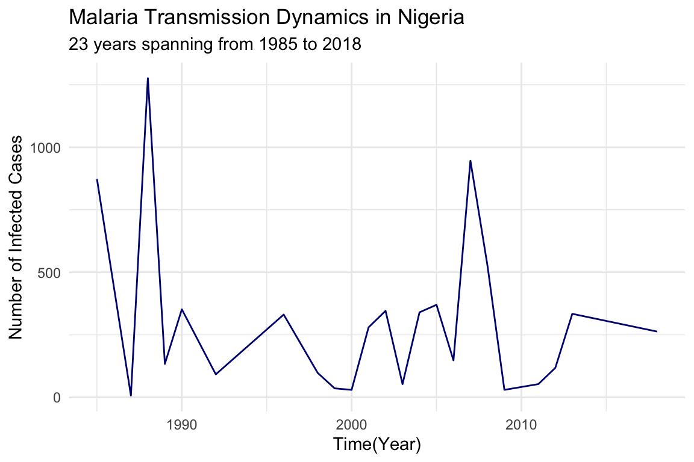
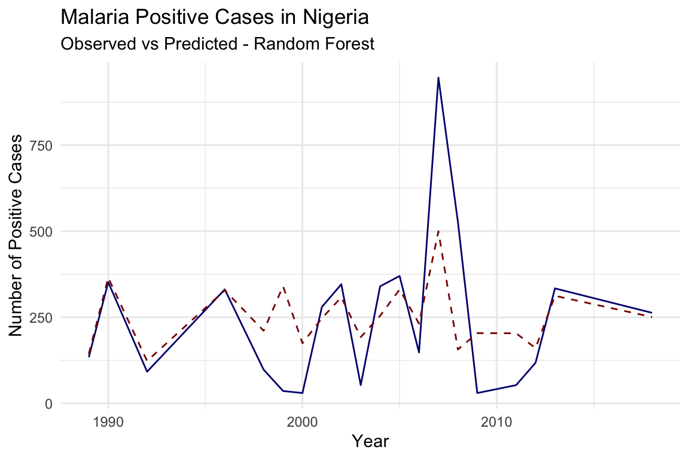
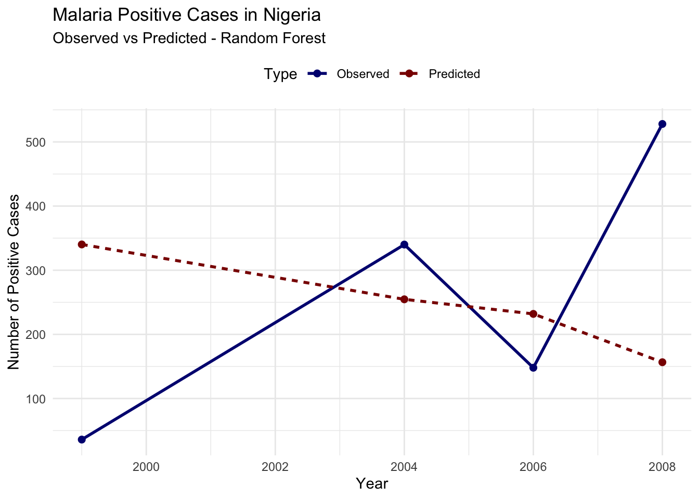
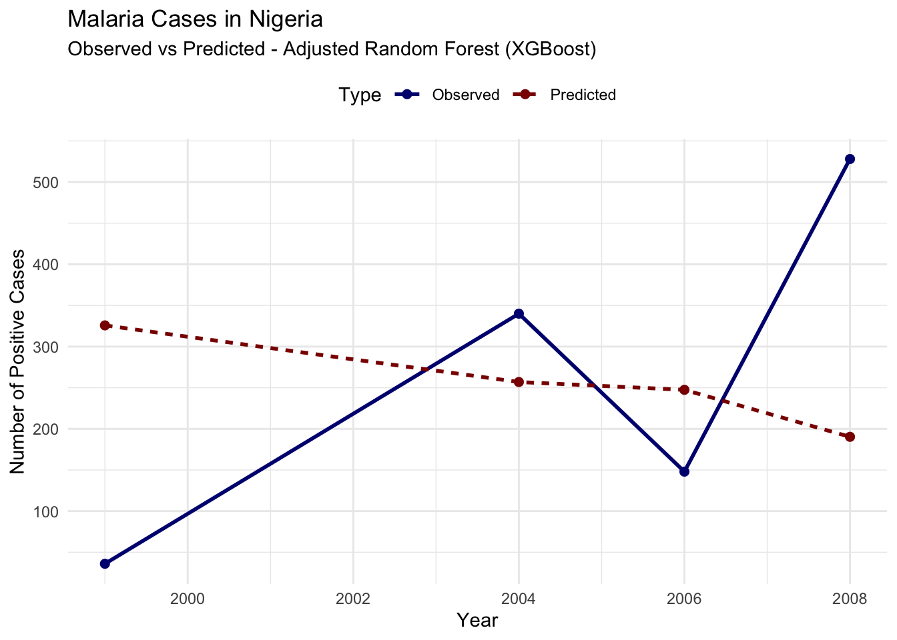
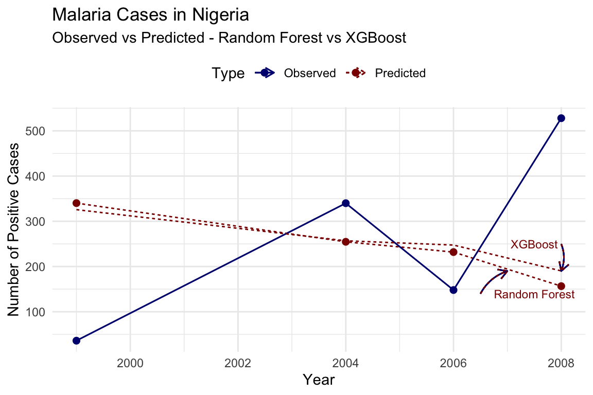

# Load necessary libraries
library(malariaAtlas)
library(tidyverse)
library(sf)
library(rnaturalearth)16 The Case of Malaria
Learning Objectives
- Understand the key characteristics and impact of Malaria
- Explore how Malaria spreads through populations and environments
- Learn to map and visualize Malaria outbreaks using spatial data
In this chapter, we explore the dynamics of Malaria transmission in more detail. We examine the results of various model’s applications that simulate the spread of the virus.
16.1 Epidemiology
Malaria is a mosquito-borne infectious disease that affects humans and other animals. It is caused by parasitic protozoans belonging to the Plasmodium type. The disease is transmitted through the bites of Anopheles mosquitoes. The symptoms of malaria typically include fever, fatigue, vomiting, and headaches. If left untreated, malaria can be fatal. Malaria is a major public health concern in many tropical and subtropical regions, particularly in Africa.
Malaria transmission dynamics are influenced by various factors, including the prevalence of infected individuals, the density of mosquito vectors, and environmental conditions. The transmission of malaria occurs when an infected mosquito bites a human host, injecting the Plasmodium parasites into the bloodstream. The parasites then multiply within the host’s red blood cells, leading to the characteristic symptoms of malaria. The parasites can be transmitted back to mosquitoes when they feed on infected individuals, completing the transmission cycle.
16.2 Mapping Malaria Outbreaks
Mapping malaria outbreaks is essential for locating high-risk areas and guiding effective public health interventions. Geographic Information Systems (GIS) enable the visualisation of malaria’s spatial distribution, revealing transmission patterns and hotspots. The analysis of malaria cases, alongside environmental factors, such as temperature, humidity, and vegetation cover, allows the identification of conditions that facilitate transmission and support the development of targeted control strategies.
In this example, we will use the malariaAtlas package to download malaria data for Nigeria and visualise the distribution of malaria cases in the country. We will plot the malaria hotspots on a map of Nigeria to identify regions with the highest incidence of the disease.
tidyverse_conflicts()To download malaria data we can use the getPR() function, it releases the data from the Malaria Atlas Project API. The function requires the country and species of Plasmodium to be specified. In this example, we will download data for Nigeria and the Plasmodium falciparum species.
nigeria_data <- getPR(country = "Nigeria",
species = "Pf")Data contains cases for 23 years spanning from 1985 to 2018. We can extract the relevant information (year_start (of the survey), longitude, latitude, and number of positive cases) and convert the data to a spatial object using the st_as_sf() function from the sf package.
nigeria_data <- nigeria_data %>%
arrange(year_start) %>%
select(year_start,longitude,latitude,positive) %>%
filter(!is.na(longitude) & !is.na(year_start))
nigeria_data_sf <- nigeria_data %>%
st_as_sf(coords = c("longitude", "latitude"),
crs = 4326)
head(nigeria_data_sf)
#> Simple feature collection with 6 features and 2 fields
#> Geometry type: POINT
#> Dimension: XY
#> Bounding box: xmin: 3.05 ymin: 6.316 xmax: 12.76 ymax: 11.1578
#> Geodetic CRS: WGS 84
#> year_start positive geometry
#> 1 1985 113 POINT (3.132 6.501)
#> 2 1985 760 POINT (3.283 6.667)
#> 3 1987 7 POINT (3.05 7.167)
#> 4 1988 433 POINT (12.76 11.1578)
#> 5 1988 363 POINT (10.632 7.2333)
#> 6 1988 181 POINT (7.549 6.316)To get the administrative boundaries of Nigeria we use the {rnaturlaearth} package:
nigeria_sf <- ne_countries(country = "Nigeria",
returnclass = "sf")And finally plot the malaria hotspots on a map of Nigeria to visualise the distribution of malaria cases in the country.
# Plot Malaria Hotspots with expanded spatial data range
ggplot() +
geom_sf(data = nigeria_sf,
fill = "gray90",
color = "white")+
geom_sf(data = nigeria_data_sf,
aes(size=positive, color = positive),
alpha=0.5)+
scale_color_viridis_c(option = "plasma", name = "Malaria Cases") +
guides(size = "none") +
labs(title = "Malaria Hotspots in Nigeria",
subtitle = "1985-2018",
caption = "Source: Malaria Atlas Project | @fgazzelloni") +
theme(legend.position = "right")
Spatial data on climate, population density, and mosquito habitats are instrumental in predicting high-risk areas for malaria, aiding preventive measures like bed net distribution and indoor residual spraying. In Tanzania, for example, spatial models identified villages with the highest malaria incidence, allowing the government and NGOs to prioritize these areas for intervention.1 This targeted approach enhances the cost-effectiveness of malaria control programs, reducing the disease burden by directing resources to areas with the greatest need.

16.3 Example: Simulating Malaria Transmission Dynamics
In this example, we will use data for Malaria positive cases in Nigeria from the Malaria Atlas Project to evaluate the transmission dynamics using a simple mathematical model. We will use machine learning to predict future trends.
To illustrate the modelling and prediction process we will use the {caret} package, which provides a unified interface for training and evaluating machine learning models. We will train a Random Forest model to predict future trends in malaria transmission based on historical data.
nigeria_cases <- nigeria_data %>%
group_by(year_start) %>%
reframe(positive = sum(positive)) %>%
rename(year = year_start) %>%
drop_na() %>%
select(year, positive)
head(nigeria_cases)
#> # A tibble: 6 × 2
#> year positive
#> <int> <dbl>
#> 1 1985 873
#> 2 1987 7
#> 3 1988 1276
#> 4 1989 134
#> 5 1990 352
#> 6 1992 92Visualize the dynamics of malaria transmission in Nigeria using a line plot to show the number of infected cases over time.
nigeria_cases %>%
ggplot() +
geom_line(aes(x = year, y = positive),
color = "navy",
linetype = "solid") +
labs(title = "Malaria Transmission Dynamics in Nigeria",
subtitle = "23 years spanning from 1985 to 2018",
x = "Time(Year)",
y = "Number of Infected Cases") +
theme_minimal()
16.3.1 Modelling with caret
To train a machine learning model to predict future trends in malaria transmission, we will be using 80% of the original data to train the model and 20% to test it. Then, we will evaluate its performance using the Root Mean Squared Error (RMSE).
The {caret} package provides a unified interface for training and evaluating machine learning models in R (Chapter 8). It supports a wide range of algorithms and provides tools for hyperparameter tuning, cross-validation, and model evaluation.
# Load libraries and check for conflicts
library(caret)
conflicted::conflicts_prefer(dplyr::lag)16.3.1.1 Feature Engineering
Create lagged variables to capture the temporal dynamics of malaria transmission. For time series forecasting, it’s helpful to create variables, which represent past values of the target variable. This allows the model to learn trends from previous values.
# Create lagged features (e.g., previous year's cases)
nigeria_cases <- nigeria_cases %>%
arrange(year) %>%
mutate(lag_1 = lag(positive, 1),
lag_2 = lag(positive, 2),
lag_3 = lag(positive, 3)) %>%
drop_na()
head(nigeria_cases)
#> # A tibble: 6 × 5
#> year positive lag_1 lag_2 lag_3
#> <int> <dbl> <dbl> <dbl> <dbl>
#> 1 1989 134 1276 7 873
#> 2 1990 352 134 1276 7
#> 3 1992 92 352 134 1276
#> 4 1996 331 92 352 134
#> 5 1998 98 331 92 352
#> 6 1999 36 98 331 92Create partition for training and testing data using the createDataPartition() function from the caret package.
set.seed(123)
train_index <- createDataPartition(nigeria_cases$positive,
p = 0.8, list = FALSE)
train <- nigeria_cases[train_index, ]
test <- nigeria_cases[-train_index, ]16.3.1.2 Model Selection and Training (Parameter Calibration)
Define the machine learning model specific for investigating Malaria dynamics. In this case, we will use the time and number of lagged cases to predict the number of infected cases. We will use the train() function from the {caret} package to train the model. A suitable model would be? List the models that can be used for this task:
- Random Forest (“rf”)
- Gradient Boosting (“gbm”)
- Support Vector Machines (“svm”)
- Neural Networks (“nnet”) - etc.
In the method argument, specify the model to be used (e.g., “rf” for Random Forest). The trControl argument specifies the cross-validation method for hyperparameter tuning, and the tuneGrid argument defines the hyperparameter grid for tuning.
# Define the training control with 5-fold cross-validation
train_control <- trainControl(method = "cv",
number = 5)
# Define a tuning grid for mtry
# (number of variables sampled at each split)
tuning_grid <- expand.grid(mtry = c(1, 2, 3))
# Train the Random Forest model
set.seed(123)
rf_model <- train(
positive ~ lag_1 + lag_2 + lag_3,
data = train,
method = "rf",
trControl = train_control,
tuneGrid = tuning_grid,
ntree = 500) # Number of trees The parameter calibration (hyperparameter tuning) is performed by the train function automatically using cross-validation to select the optimal hyperparameters for the model.
16.3.1.3 Model Evaluation
Testing the model on observed data will show how the model performs in estimating the number of infected cases.
# Predict on the test data
nigeria_cases$pred <- predict(rf_model,
newdata = nigeria_cases)nigeria_cases %>%
ggplot(aes(x = year, y = positive)) +
geom_line(color = "navy", linetype = "solid") +
geom_line(aes(y = pred),
color = "darkred", linetype = "dashed") +
labs(title = "Malaria Positive Cases in Nigeria",
subtitle = "Observed vs Predicted - Random Forest",
x = "Year",
y = "Number of Positive Cases") +
theme_minimal()
To evaluate the model’s ability in predicting future trends, we predict the number of infected cases on the test data and calculate the Root Mean Squared Error (RMSE). Test data are a subset of the original data that were not used for training the model and provide an independent evaluation of the model’s performance.
# Predict on the test data
test$pred <- predict(rf_model,
newdata = test)
# View predictions alongside actual values
head(test[, c("year", "positive", "pred")])
#> # A tibble: 4 × 3
#> year positive pred
#> <int> <dbl> <dbl>
#> 1 1999 36 340.
#> 2 2004 340 255.
#> 3 2006 148 232.
#> 4 2008 528 157.Visualize the predicted vs actual infected cases using a line plot to compare the model’s predictions with the actual data.
# Reshape data for plotting
plot_data_rf <- test %>%
select(year, positive, pred) %>%
rename(Observed = positive, Predicted = pred) %>%
pivot_longer(cols = c("Observed", "Predicted"),
names_to = "Type", values_to = "Cases")
plot_data_rf %>% head()
#> # A tibble: 6 × 3
#> year Type Cases
#> <int> <chr> <dbl>
#> 1 1999 Observed 36
#> 2 1999 Predicted 340.
#> 3 2004 Observed 340
#> 4 2004 Predicted 255.
#> 5 2006 Observed 148
#> 6 2006 Predicted 232.# Plot observed vs predicted cases
ggplot(plot_data_rf, aes(x = year, y = Cases,
color = Type, linetype = Type)) +
geom_line(size = 1) +
geom_point(size = 2) +
scale_color_manual(values = c("navy", "darkred")) +
labs(title = "Malaria Positive Cases in Nigeria",
subtitle = "Observed vs Predicted - Random Forest",
x = "Year",
y = "Number of Positive Cases") +
theme_minimal() +
theme(legend.position = "top")
Evaluate the model’s performance using RMSE:
# Calculate RMSE
rmse <- sqrt(mean((test$positive - test$pred)^2))
cat("RMSE:", rmse, "\n")
#> RMSE: 247.3936A Root Mean Squared Error (RMSE) of 247.3936 indicates the average difference between the predicted and actual values of infected cases. Lower RMSE values indicate better model performance.
The output shows that the model’s predictions are not closely aligned with the observed values, the predicted trend seems to be relatively flat or declining, while the observed cases show significant fluctuations. This mismatch suggests that the current model setup may not be effectively capturing the dynamics of malaria transmission in this dataset.
16.4 Model Refinement
To improve the model’s performance, we can refine the model by adjusting parameters such as ‘mtry’ in Random Forest. For example, increase the number of folds in cross-validation, adjust the tuning grid, or add additional features to improve the model’s performance.
# Increase the number of folds in cross-validation
train_control <- trainControl(method = "cv",
number = 10)
# Scaling data in caret
rf_model2 <- train(
positive ~ year + lag_1 + lag_2 + lag_3,
data = train,
method = "rf",
trControl = train_control,
tuneGrid = expand.grid(mtry = 2:4),
preProcess = c("center", "scale"))Predict future trends using the trained adjusted Random Forest model on the test data.
# Predict on the test data
test$pred_rf2 <- predict(rf_model2,
newdata = test)Visualize the predicted vs actual infected cases using a line plot to compare the adjusted Random Forest model’s predictions with the actual data.
# Reshape data for plotting
plot_data_xgb <- test %>%
select(year, positive, pred_rf2) %>%
rename(Observed = positive, Predicted = pred_rf2) %>%
pivot_longer(cols = c("Observed", "Predicted"),
names_to = "Type", values_to = "Cases")
plot_data_xgb %>% head()
#> # A tibble: 6 × 3
#> year Type Cases
#> <int> <chr> <dbl>
#> 1 1999 Observed 36
#> 2 1999 Predicted 326.
#> 3 2004 Observed 340
#> 4 2004 Predicted 257.
#> 5 2006 Observed 148
#> 6 2006 Predicted 247.# Plot observed vs predicted cases
ggplot(plot_data_xgb, aes(x = year, y = Cases,
color = Type, linetype = Type)) +
geom_line(size = 1) +
geom_point(size = 2) +
scale_color_manual(values = c("navy", "darkred")) +
labs(title = "Malaria Cases in Nigeria",
subtitle = "Observed vs Predicted - Adjusted Random Forest (XGBoost)",
x = "Year",
y = "Number of Positive Cases") +
theme_minimal() +
theme(legend.position = "top")
Evaluate the model’s performance improvement using RMSE:
# Calculate RMSE
rmse <- sqrt(mean((test$positive - test$pred_rf2)^2))
cat("RMSE:", rmse, "\n")
#> RMSE: 231.7169To visualise the improvement in model’s performance, we can plot the observed vs predicted for both models:

In conclusion, the model’s performance can be further improved by adjusting hyperparameters, adding additional features, or using more advanced algorithms. The iterative process of model refinement and evaluation is essential for developing accurate predictions of malaria transmission dynamics.
16.5 Summary
In this chapter, we explored the dynamics of malaria transmission and emphasized the importance of mapping outbreaks to guide public health interventions. Using the malariaAtlas package, we downloaded malaria data for Nigeria and visualized the spatial distribution of cases across the country. Additionally, and demonstrated how machine learning techniques can analyse historical data to predict future trends in malaria transmission.
Majige Selemani et al., “Assessing the Effects of Mosquito Nets on Malaria Mortality Using a Space Time Model: A Case Study of Rufiji and Ifakara Health and Demographic Surveillance System Sites in Rural Tanzania,” Malaria Journal 15, no. 1 (May 4, 2016): 257, doi:10.1186/s12936-016-1311-9.↩︎